Step-by-step guide
- Type the project name (S. cerevisiae: pH, CO2) in the text box located at the bottom of the Homepage and then click Start New Project (Figure 1).
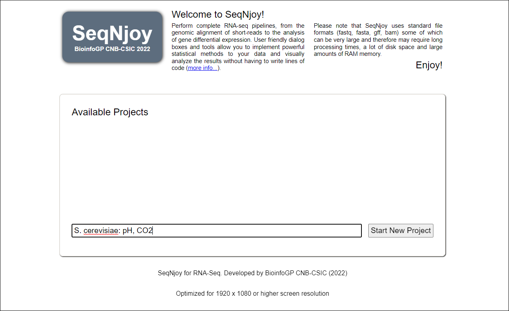
Figure 1: Creating your project
- In the Project’s Main Page displayed (Figure 2) press Load Files and select in your computer the reference genome (FASTA) file, the gene features (GFF) file and the annotations (ANN) file.

Figure 2: Project’s Main page
- The application will display a pop-up window showing the progress of the files being uploaded (Figure 3).
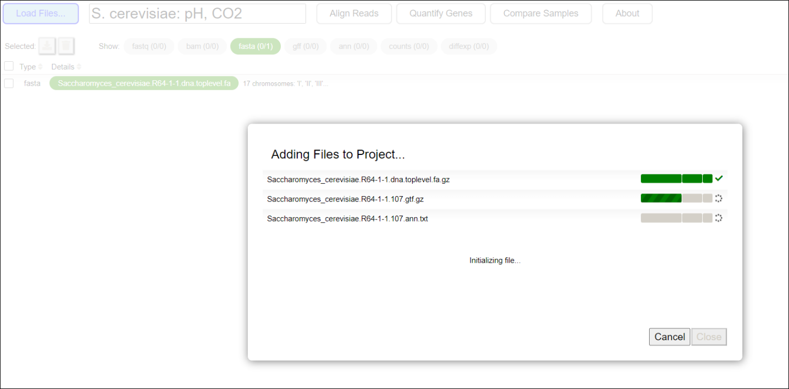
Figure 3: Uploading files in SeqNjoy
Once the files have been added to the project, the window will display a message “All steps done!” (Figure 4). Click Close button on this window to be redirected to the Project’s Main Page.
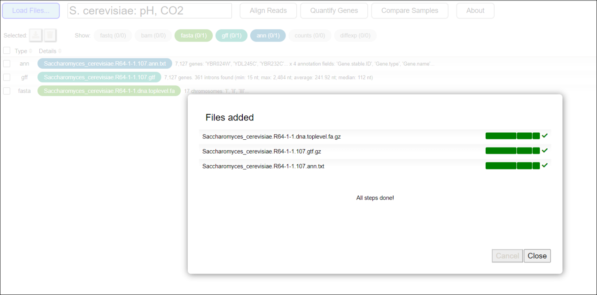
Figure 4: Uploading process successful
- Note that the Project’s Main Page lists now the three files added to the project (Figure 5).
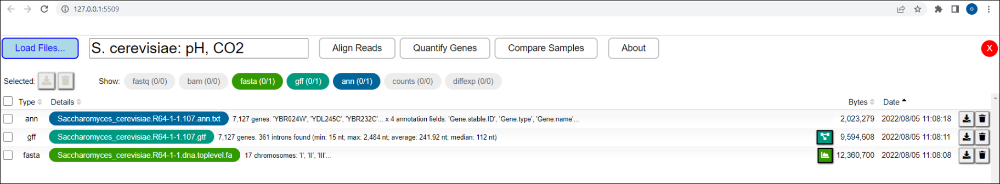
Figure 5: File List
- Click the
 icon located at the rightmost of the “Details” column corresponding to the GFF file to get a glimpse of the genome structure in the form of a tree of dependencies between the feature types present in the GFF file (Figure 6).
icon located at the rightmost of the “Details” column corresponding to the GFF file to get a glimpse of the genome structure in the form of a tree of dependencies between the feature types present in the GFF file (Figure 6).
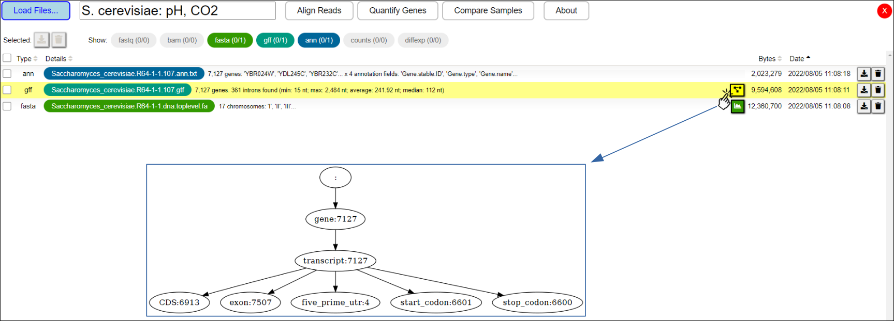
Figure 6: Viewing the tree of dependencies between the feature types present in the GFF file
- Proceed as in step 2 to load the files that contain the short reads (FASTQ files): click Load Files button and select in your computer the FASTQ files to be processed. As seen before (step 3), a pop-up window showing the progress of the upload will be displayed (Figures 7-8). Click Close when the message “All steps done!” is displayed to be redirected to the Project’s Main Page.
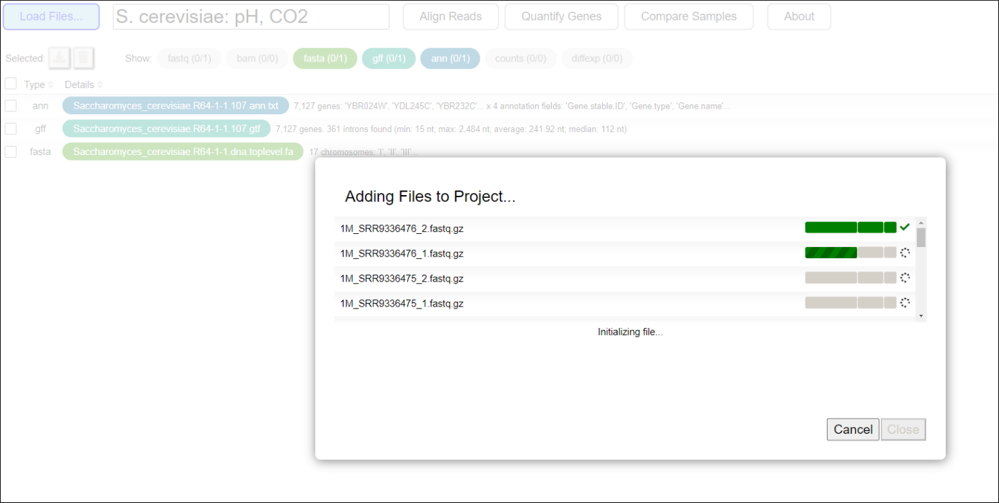
Figure 7: Uploading FASTQ files
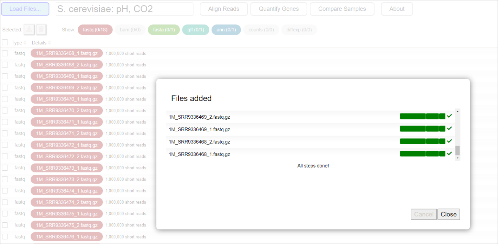
Figure 8: Uploading process successful
- After the files have been added to the project, you will see them listed along with the other input files in the Project’s Main Page (Figure 9).
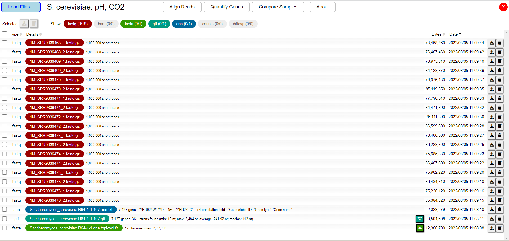
Figure 9: File List with all input files loaded
All FASTQ files contain one million reads. We have randomly subset this amount of short reads from the real files for this example in benefit of speed. Now, we will align the short reads contained in the FASTQ files to the genome reference contained in the FASTA file and will obtain files with the alignments (BAM files).
In the Project’s Main Page click Align Reads button, located in the upper part of the page (Figure 10). A submenu will appear for you to select one of the two methods that are available in SeqNjoy to perform this task. For this project we select “bowtie2” so we click “Align reads with bowtie2” option.
Figure 10: Align Reads: selecting alignment method (aligner)
- In the Align Reads to Genomes dialog displayed (Figure 11), select the input FASTA and FASTQ files. The dialog also contains some parameters associated to the alignment method (shaded area on the right). For this example, do not modify the default values of these parameters. Click the Launch! button to perform the alignment task (Figure 12).
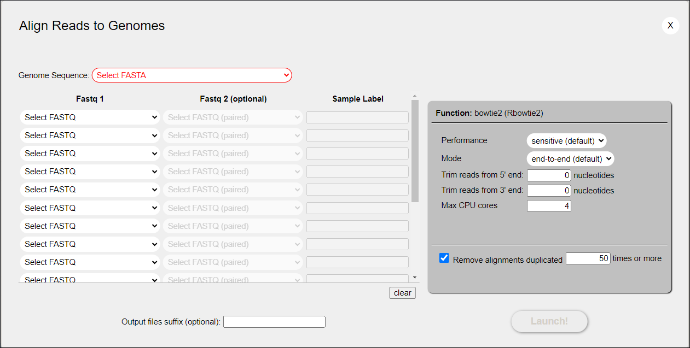
Figure 11: Align Reads to Genomes dialog
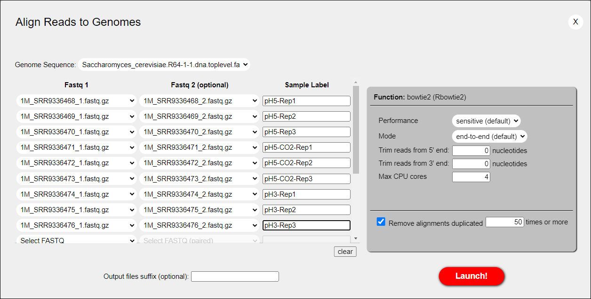
Figure 12: Align Reads to Genomes dialog ready to launch the alignments processes.
Alignments may take a long time, depending on the number and size of the FASTQ files. A pop-up window informs you of the progress of the alignment task. - When the whole process ends, click “Close” button (Figure 13).
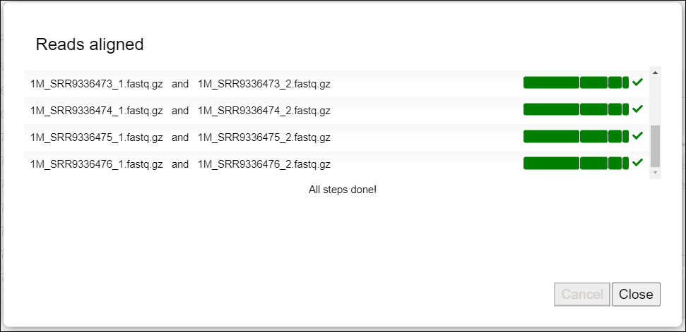
Figure 13: Alignment process ended OK
- Now you are in the “Align Reads to Genomes” dialog again (Figure 14). Now, you could fill in the data to run additional alignments or click the “X” icon to close this window. As we do not wish to align more FASTQ files, click the “X” icon.
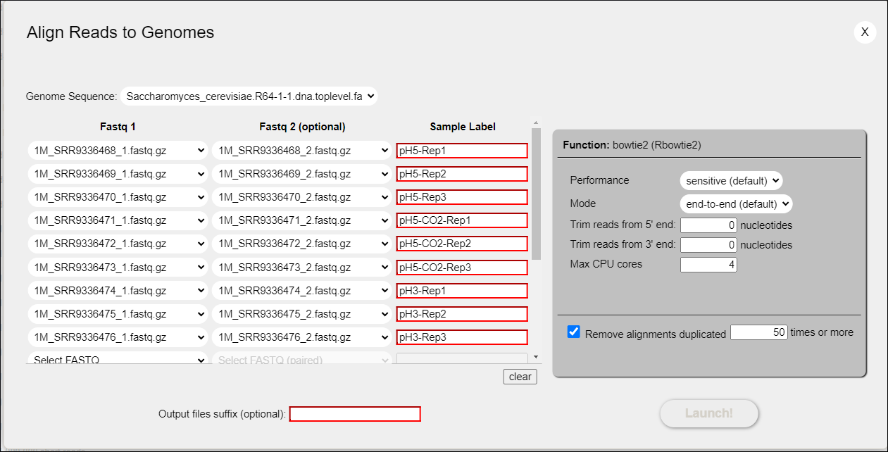
Figure 14: Align Reads to Genomes dialog: click the “X” icon (top right) to exit the window
- You will return to the Project’s Main Page, which will have been updated to contain the new alignment files (extension .bam) in its File List (Figure 15).
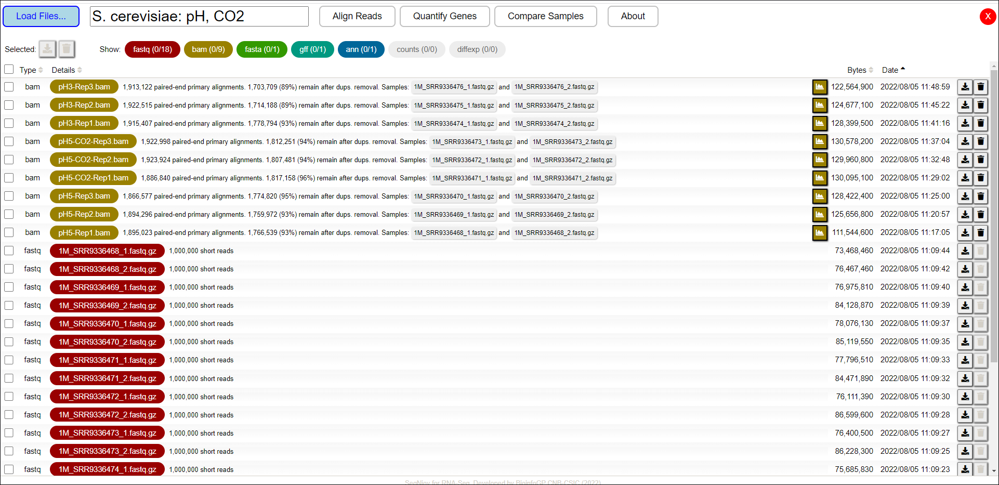
Figure 15: File list with the new alignment (.bam) files added
- From the File List, you can explore visually the BAM files that contains the alignments generated. To do that, click the
 icon in the File List for the BAM file of interest (“pH5-Rep1.bam” in the example of Figure 16).
icon in the File List for the BAM file of interest (“pH5-Rep1.bam” in the example of Figure 16).
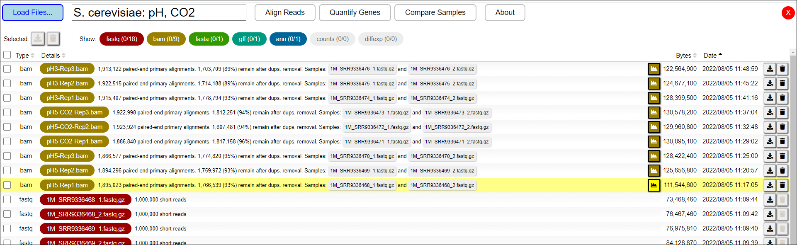
Figure 16: Selecting a .bam file in the File list to access IGV viewer
- You will be directed to the IGV utility, a popular genome browser to inspect alignments (among other utilities). You can see in Figure 17 that there are two tracks loaded: the upper track for the reference genome of Saccharomyces cerevisiae (chromosomes I, II, III, etc.), and the bottom track corresponding to the “pH5-Rep1.bam” alignments file.
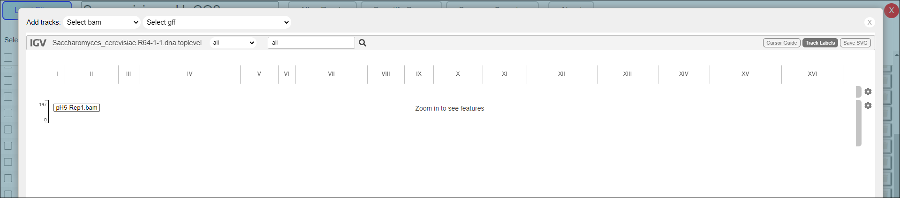
Figure 17: pH5-Rep1.bam alignments file loaded in IGV
- Select now the GFF file corresponding to that BAM file in the Select gff drop-down menu at the top (Figure 18). GFF track will be added (Figure 19).
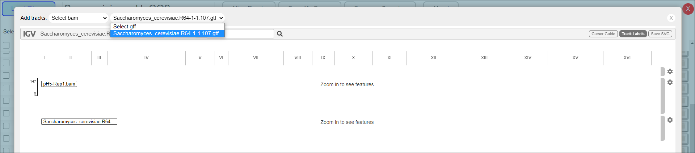
Figure 18: GFF selection
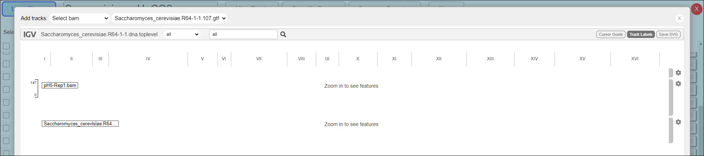
Figure 19: GFF track is displayed after selection (bottom track)
- Focus on a certain region to inspect their alignments. In the text box (close to the GFF filename) type the following region of the chromosome I: I:126,500-136,000 (Figure 20).
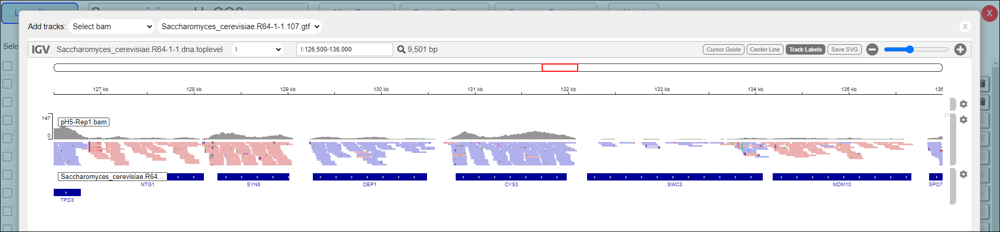
Figure 20: Zooming in on region I:126,500-136,000 to explore the alignments on that region
At this magnification you can appreciate the different pile up of reads between genes, mirroring different expression levels. You can see an additional feature of this partiucular sequencing: depending on the orientation of the gene, reads are colored differently. Genes oriented forward (“> > >” on the genes bar) are colored blue and genes in oriented reverse (“< < <”) are colored red. This coloring indicates that the protocol followed in the sequencing of the sample was reverse stranded. You can find more information on strandness in RNA-seq and how to determine the strandness using IGV in the Tutorial.
- Very often, we are interested in comparing the alignments of different samples in a certain region. In this example, we are going to incorporate more samples and see how align all of them in the above-defined region of chromosome I. To do that, select the BAM files of interest in the top “Select bam” selector. In Figure 21 you can see the aspect when other three samples (“pH5-Rep2.bam”, “pH5-CO2-Rep1.bam” and “pH5-CO2-Rep2.bam”) have been loaded.
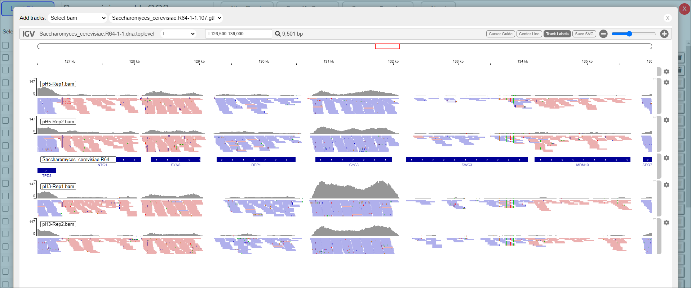
Figure 21: Comparing alignment files with IGV
As an example, you can see differences in the coverage (number of reads in a certain region, see the “mountains” above the reads) of gene CYS3 between the “pH5” replicas (top) and the “pH3” replicas (bottom). These differences may be or not statistically significant, a question that only can be solved after performing the Compare Samples process in the next steps.
After inspecting the alignments, close IGV tool by clicking the “X” icon at the top right to return to the Project’s Main Page and continue to the next task of the workflow.
- Click the “Quantify Genes” button in the Project’s Main Page and select “Quantify Genes with featureCounts” (Figure 22) to access the dialog for quantifying genes (Figure 23).
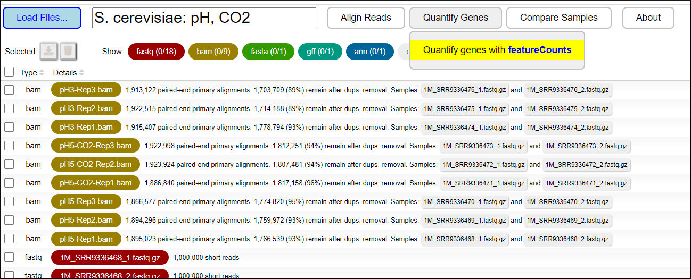
Figure 22: Selecting Quantify Genes task
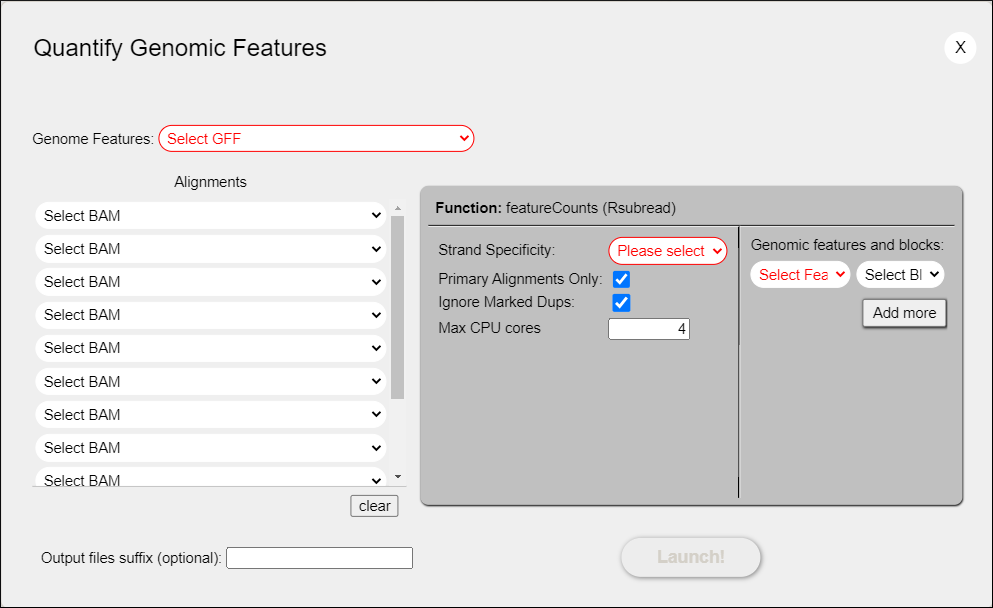
Figure 23: Quantification dialog
- Select the Genome Features file (GFF) from the list of loaded GFF files displayed in the drop-down menu (Figure 24).
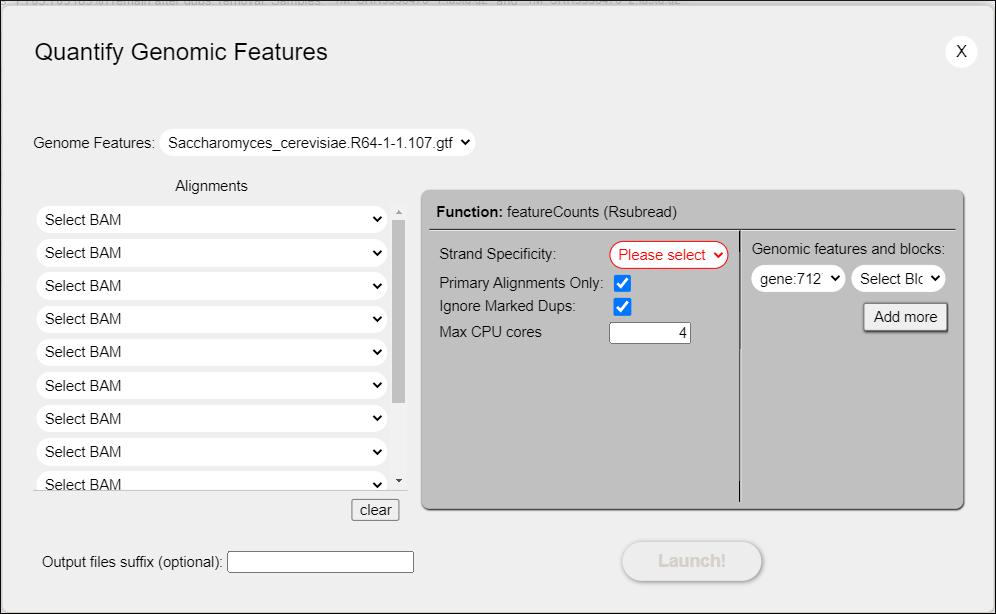
Figure 24: Select GFF file
- Select the Alignments files (BAM) from the list of the BAM files that have been generated in the previous Align Reads task (Figure 25).
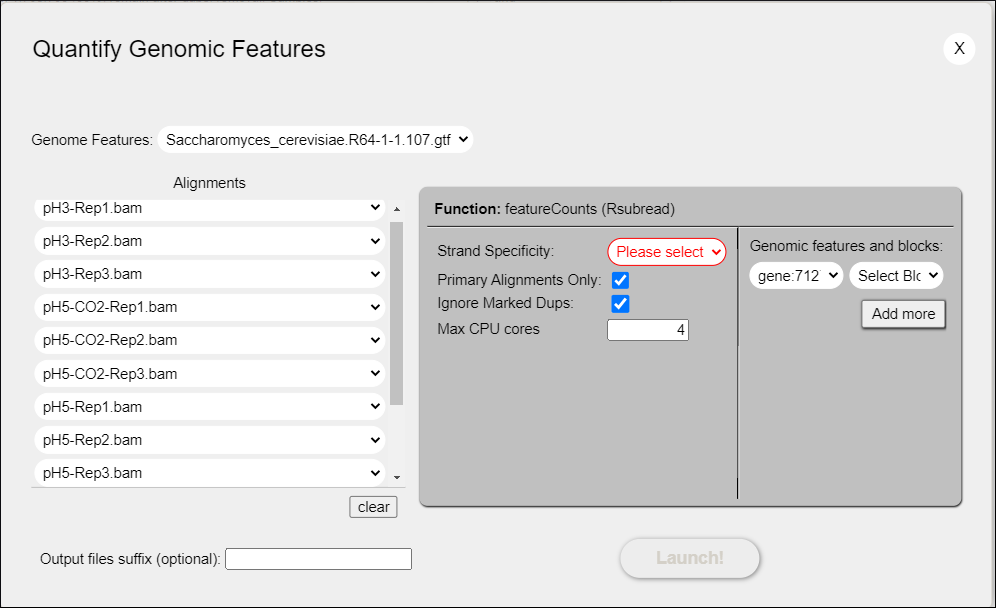
Figure 25: Select BAM files
- Open the drop-down menu labelled Strand Specificity to display the possible options for this parameter (Figure 26). Strand Specificity refers to the protocol (reverse, direct or unstranded) followed in the library preparation of the samples. See the Tutorial to get more insight into this important issue.
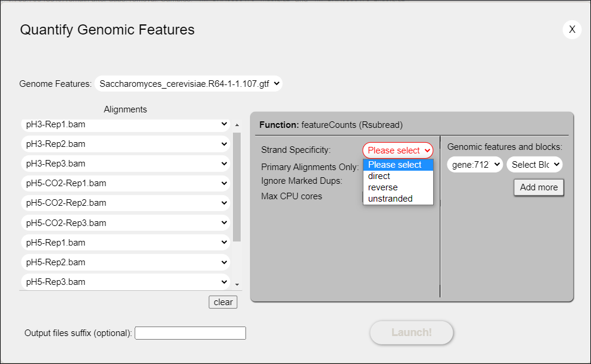
Figure 26: Select the Strand Specificity protocol used in the library preparation of the samples
- In the sequencing of this example a reverse stranded protocol was followed, so we select this option from the list (Figure 27).
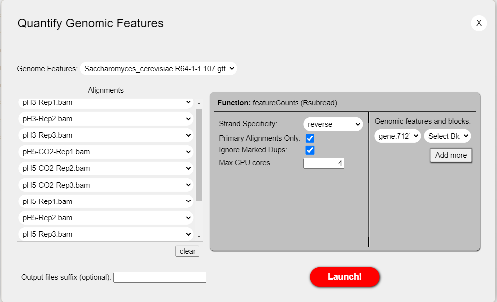
Figure 27: Strand Specificity: reverse protocol is selected
- Click “Launch!” to quantify counts-by-gene in each of the nine alignment (BAM) files. A pop-up window informs of the progress of the quantification task (Figure 28).
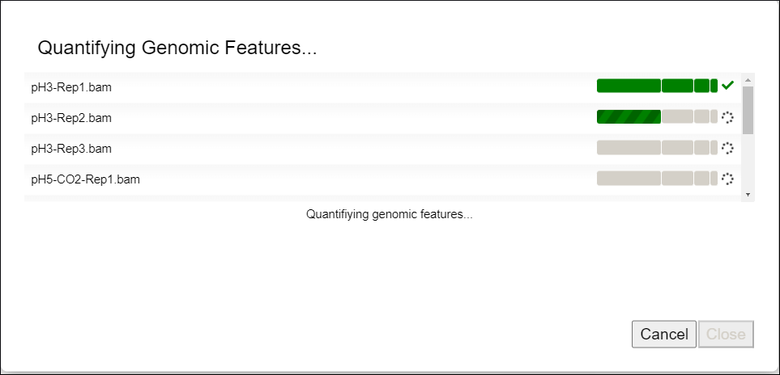
Figure 28: File list with the new alignment (.bam) files added
- When the whole process ends a message “done” is displayed. Click Close button (Figure 29).
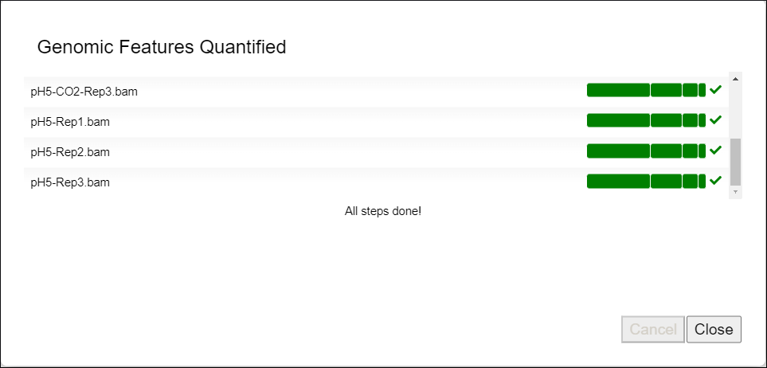
Figure 29: Quantify Samples ended OK
- You will return to the Quantify Genomic Features dialog. Click the “X” icon to close this window (Figure 30).
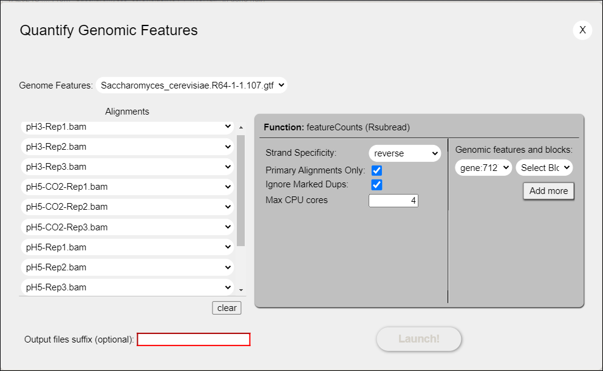
Figure 30: Click the “X” icon (top right) to close Quantify Genomic Features dialog
- You are now again in the “Project’s Main Page”. The File List will have been updated to contain the new “counts” files generated by the quantification task (Figure 31).

Figure 31: File list with the new counts (.counts) files added
- In the following steps you will obtain the list of differentially expressed genes between the test group of samples that grew at pH5 in presence of CO2 and the control group, that grew at pH5 in absence of CO2. To access this task, click the Compare Samples button located in the upper part of the “Project’s Main Page”. Then select “Compare samples with DESeq2” option as the method to perform the differential expression calculations (Figure 32).
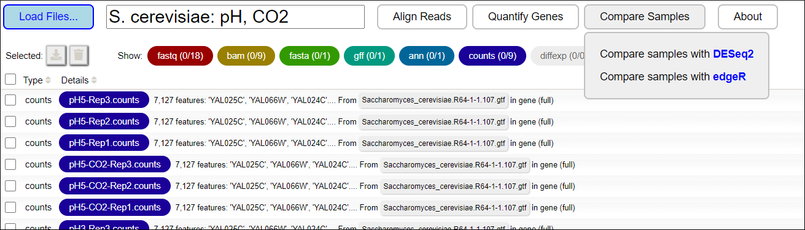
Figure 32: Compare Samples: selecting the method for calculating differential expression
- After selecting the method, the Calculate Differential Expression dialog is displayed to be filled in (Figure 33).
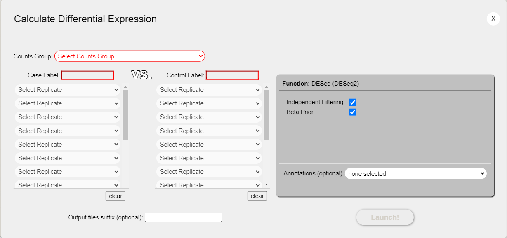
Figure 33: Calculate Differential Expression dialog as displayed initially.
- Select the Counts group from the list displayed in the drop-down menu (Figure 34). Observe that the name of the Counts Group is composed of two parameters chosen when quantifying genes: the name of the GFF file (Saccharomyces_cerevisiae-R64-1-1.107.gtf) plus the feature type (gene).
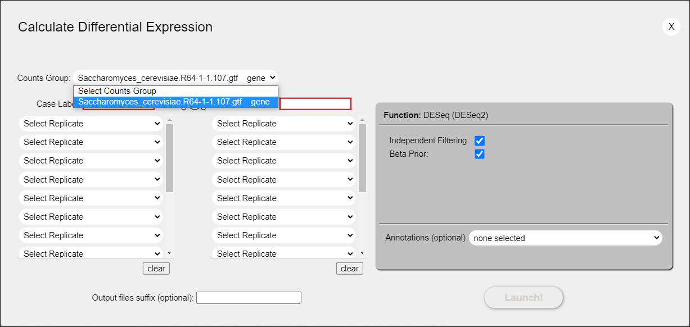
Figure 34: Calculate Differential Expression: select counts group
- Select in the drop-down menus the counts files corresponding to the Case group of samples and the counts files corresponding to the Control group of samples. Type identifying names for each condition in the Case Label (type "pH5_CO2") and Control Label (type "pH5") text boxes (Figure 35). These names will be incorporated in the final result files.
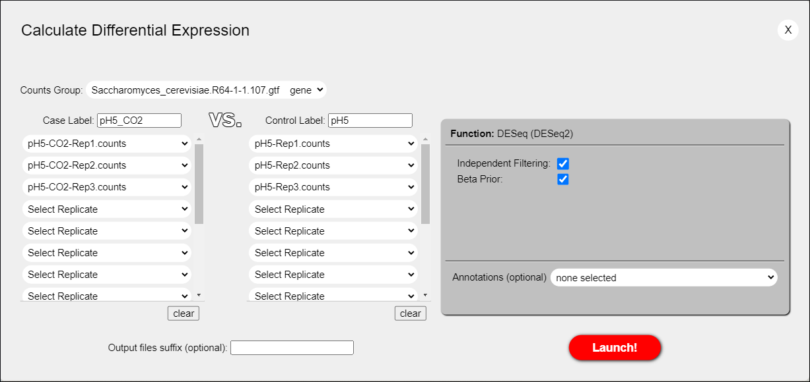
Figure 35: Calculate Differential Expression: counts files assignment to counts groups and Case and Control naming
- We loaded previously an annotations file with useful information (annotations) that can be added to each gene in the results file containing the differential expression calculations. Select this annotations file in the corresponding Annotations drop-down menu (Figure 36). Then launch the Calculate Differential Expression process by clicking the Launch! button.
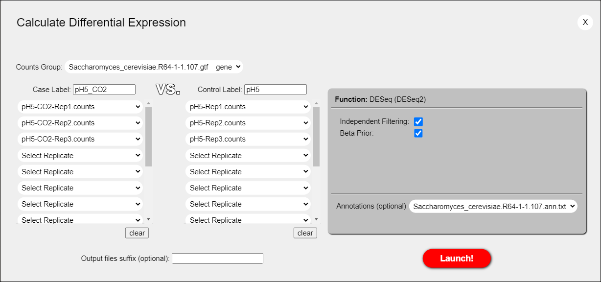
Figure 36: Calculate Differential Expression dialog for differential expression ready to be launched
- When the process ends the message “done” is displayed in the pop-up window that informs of the progress the “differential expression” task (Figure 37).
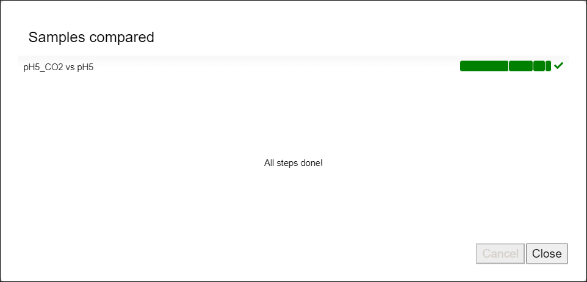
Figure 37: ph5_CO2 versus pH5 comparison ended OK
- Click the Close button and you will return to the Calculate Differential Expression dialog (Figure 38).
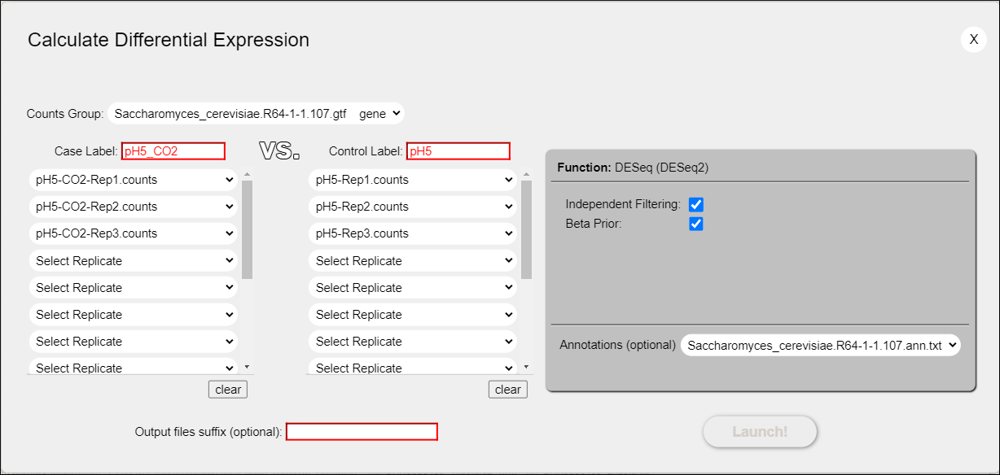
Figure 38: Calculate Differential Expression dialog after returning from a previous done comparison
- Now, we can fill in again the form with a new comparison between two groups of samples to calculate the differential expression between them. For example, we wish now to compare the samples that grew at pH3 and those that grew at pH5. So, we will consider pH3 as “Case” condition and keep pH5 as “Control” condition. To modify the form according to new comparison, we first clean the previous “Case” data from the form by clicking the “Clear” button located at the bottom of the “Case” column (Figure 39).
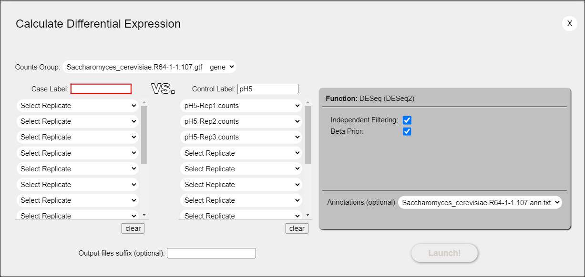
Figure 39: Calculate Differential Expression: using the Clear button to clean data from the dialog
- Fill in the “Case” column with the data corresponding to the “pH3” condition, i.e., the counts files of the samples in “pH3” condition and a “Case Label” (type "pH3") to identify this condition (Figure 40).
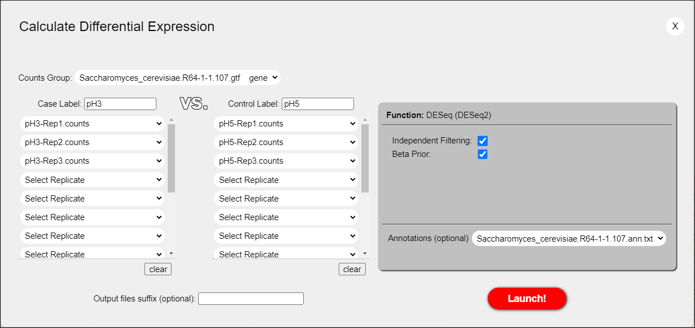
Figure 40: Calculate Differential Expression dialog for differential expression ready to be launched for the second comparison
- Click the “Launch!” button. After calculating the differential expression for this second comparison, the pop-up progress window will display the “done” message (Figure 41). Click the “Close” button to return to the Calculate Differential Expression dialog.
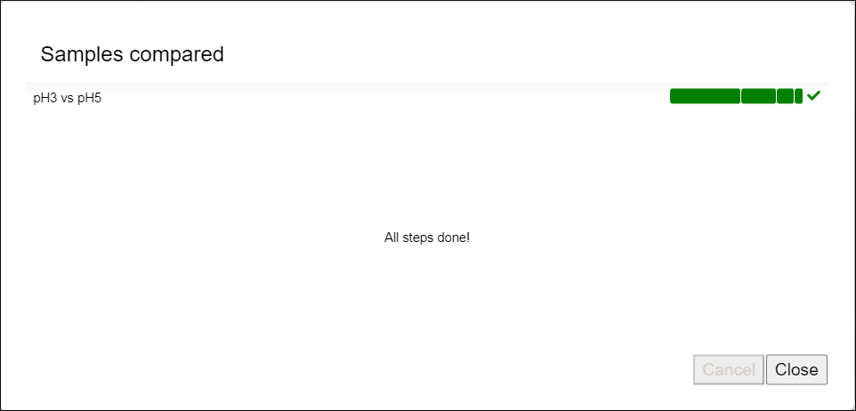
Figure 41: Calculate Differential Expression for “pH3 versus pH5” comparison ended OK
- As we do not want to perform more comparisons, click the “X” icon to close the Calculate Differential Expression window. You will then return to the Project’s Main Page, that it will have been updated to list the differential expression files generated in Excel format (extension .xlsx) containing the results of the calculated differential expressions for the two comparisons performed (Figure 42).

Figure 42: File list with the new differential expression files (.xlsx) added
- You can now graphically inspect any results file containing the comparison in the genes expression between two conditions by using the FIESTA 2.0 analytic tool. Let’s select the file with the comparison “pH3” versus “pH5” conditions. Click the icon located rightmost in the Details column of the corresponding results (.xlsx) file (Figure 43) and you will access the FIESTA 2.0.

Figure 43: Selecting a differential expression file in the File list to access FIESTA 2.0
- With FIESTA 2.0 you can set filters for selecting significant genes differentially expressed between the two conditions compared. You only have to type the filter in the text boxes located at the top of the corresponding columns. For example (Figure 44), type “>0” in the Log2Ratio column header and “<0.05” in the “P-adjusted” column header to select only the set of genes overexpressed in the case condition (pH3) respect to the control condition (pH5) for a significance threshold (adjusted P) of 0.05.

Figure 44: FIESTA 2.0 window for the pH3 versus pH5 comparison
Inspecting the differential expression results with FIESTA 2.0 we can determine now that CYS3 is overexpressed (Log2Ratio=1.61) in the test (pH3) condition respect to the control (pH5) condition and that the calculated overexpression is statistically significant (P-adjusted=4.90·10-9).
SeqNjoy: Complete RNA-Seq workflow in your Desktop. Developed by BioinfoGP CNB-CSIC (2022)